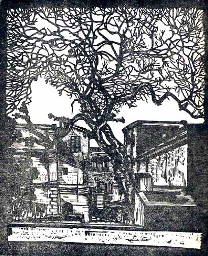
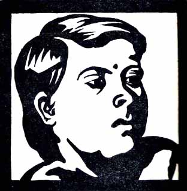
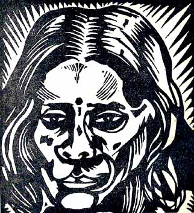

Sudhansu Kumar Ray:
An Artist-Craftsman of Bengal
BY NIHAR RANJAN RAY, M.A., P.R.S.
(University of Calcutta)
Wood-cuts and lino-cuts as methods in creative art are recent introductions of the renascent school of art of Bengal. It is not long since the remarkable creative possibilities of this form of art-craft were recognised, and the artistic expression capable of being achieved by this process discovered by our artists. This new start of wood and lino-cut in India, frankly speaking, is the direct outcome of the most recent influences of European art in the domain of Indian art and art-craft, adapted no doubt by the highly sensitive and assimilative local genius according to Indian spirit, Indian sensibility, and Indian technique. It is really very refreshing to see our artists whose paintings, chiefly in miniature, have so long drawn mainly from the lyric sensitiveness of Ajanta or from the romantic realism of the Moghul Court painters, or from the extremely feminine tenderness of Rajput miniatures, or still more recently, from the stereotyped mannerism of old indigenous folk-art–those artists stirring out to discover fresh vistas not only of new art-forms and languages, but also of art-craft for a modern world and hence from a modern stand-point.
The art-craft of wood and lino-cut has a fascination all its own. Inherent in its method and technique is a boldness of execution which leaves out details and takes notice of broad essentials alone. There is thus a strength in its attitude as well as in its expression, and what is more, a directness which never fails to appeal or please. As the technique is most simple–cutting directly on the wood with the help of a buli or, in the case of linolium with a sharp knife, in depth and surface, resulting in sharp contrasts of black and white,–and the language without any pose or sophistication whatsoever,–there is also a clear and unfailing note of sincerity which is all the more emphasised by the extremely loving and sympathetic attitude of the artist towards his subject.
We have in Bengal a small band of young artist-craftsmen who have successfully mastered this form of art-carft. One of them is a young' Calcutta artist–brilliant and resourceful–Mr. Sudhansu Ray, now a teacher of Fine Art in the Sarojnalini Industrial School for Women in Calcutta. A student of Mr. Ramendra Nath Chakravarty at the Andhra Jatheeya Kalasala, Masulipatam, Mr. Ray received his first lessons in this particular art-craft at the hand of Mr. Chakravarty. There he received the very kind help and patronage of Dr. Pattabhi Sitaramayya and Mr. Ramakotiswara Rao, then Vice-Principal of Andhra Jatheeya Kalasala (now Editor, Triveni), but for whom his youthful, enthusiastic work might have met with a set-back. Later on, he joined the Indian Society of Oriental Art in Calcutta where his merits were readily recognised. Here he was awarded the first prize in 1931 as well as the first Gold Medal of the Fine Arts Exhibition of the Calcutta University Institute in 1931 and 1932, all for wood-cuts.
Mr. Ray is equally at home and effective in his landscape works as well as in his portraits. His trees and landscapes are faithful in artistic expression and often characterised by a soft tenderness and sympathy, and a marvellous touch of simple homeliness. The composition is almost always convincing and the treatment of contrasts in black and white is direct in its visual effect. His portraits are bold and full of character brought out by easy effort and simple detail.

A Corner of Calcutta
Of the wood and lino-cuts reproduced here, one is a landscape–a lino-cut depicting" a corner of Calcutta." Calcutta is perhaps the youngest of the metropolitan cities of the world, but young though she is, she can well pride herself on her lovers who choose to kiss her into a realm of light and glory, beauty and mystery. Here straight lines and angles dominate, "brick is piled on brick and man-worm is interstitched in between." and yet she invites artists to turn her into golden. The reality of the scene can hardly be questioned; the tree shorn of its leaves, the houses in their lines and augles are so faithful in artistic expression that they at once go straight to our mind and heart. There is a sensitiveness in the treatment of the contrasts in black and white, and they are very strictly spaced in a convincing composition.
Of the two portraits, that of "A Girl" is a fine example of character-exposition by a minimum but robust and effective economy of effort. The contrast in black and white is most lovely in effect which is heightened by a mellowness of touch born of an intense sympathy which the artist feels for the subject.
Mr. Ray intends bringing out an album of his works in wood and lino-cuts. It is hoped that art-lovers in our country as well as abroad will appreciate our artist's first efforts in this line and express their heartiest wishes for his future distinction, as does the present writer.

A GIRL

A BENGALI FOLK DANCER
BACK